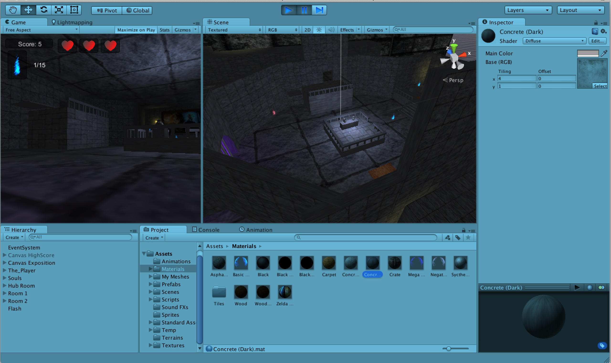

AfterLife
Unity / Game

Technologies Used
Unity3D, C#, JavaScript, Gimp, Blender, Pen and Paper sketches
Description
A game I worked on for one of my senior projects. The goals of this project was to complete a game a that fulfilled 2 of the 8 aesthetics described in the MDA framework. The aesthetics I have chosen to fulfill were Challenge and Exploration.
AfterLife is a short first person platformer where the goal is to collect enough souls to win the game. I have taken many inspirations from The Legend of Zelda series and Dark Souls. The game is not very long and can be beaten in about 10 - 15 mins by a competent player.
Enjoy.